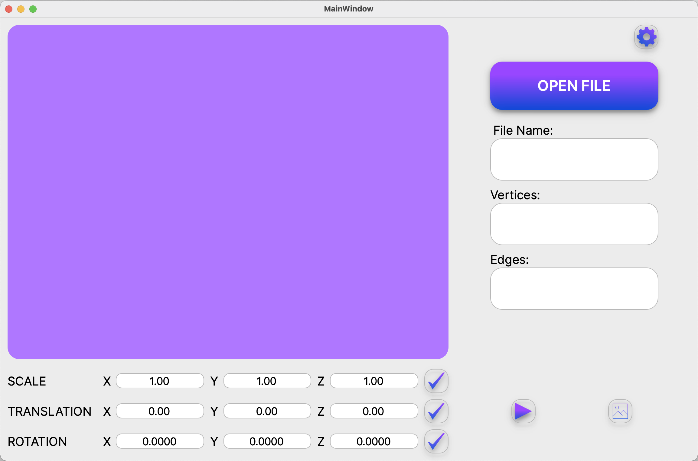
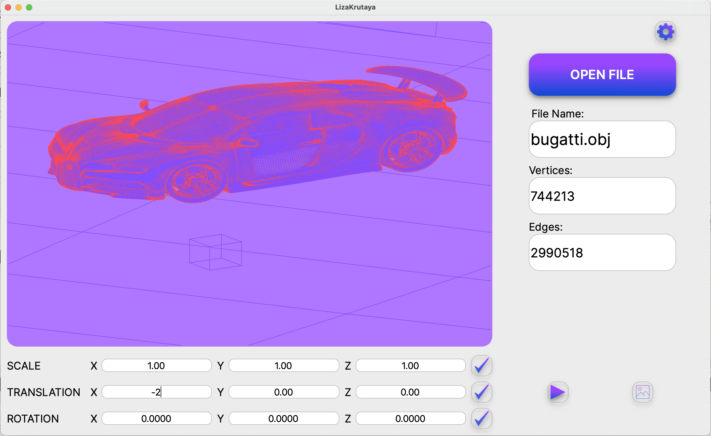
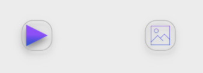

При запуске программы открывается главное окно программы, где расположен блок для просмотра моделей; кнопка окрытия файла; кнопка открытия настроек; текстовые блоки для вывода названия,количества ребер и вершин фигуры; текстовые блоки и кнопки для scale, rotate и translate;
Возможность перемещать модель на заданное расстояние относительно осей X, Y, Z;
Возможность поворачивать модель на заданный угол относительно своих осей X, Y, Z; 
При нажатии на кнопку настроек открывается окно, где можно
поменять тип проекции (параллельная и центральная), тип (сплошная,
пунктирная), цвет и толщину ребер, способ отображения (отсутствует,
круг, квадрат), цвет и размер вершин, выбирать цвет фона. Настройки
сохраняются и при последующем открытии программы они останутся в том
виде, в каком пользователь вышел из программы (с условием, что настройки
были сохранены и файл не был нарушен); 
Возможность загружать каркасную модель из файла формата obj (поддержка только списка вершин и поверхностей); 
Программа позволяет сохранять полученные (“отрендеренные”) изображения в файл в форматах bmp и jpeg;
Программа позволяет по специальной кнопке записывать небольшие “скринкасты” - текущие пользовательские аффинные преобразования загруженного объекта в gif-анимацию (640x480, 10fps, 5s). 